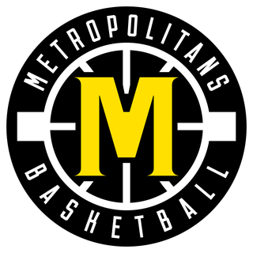
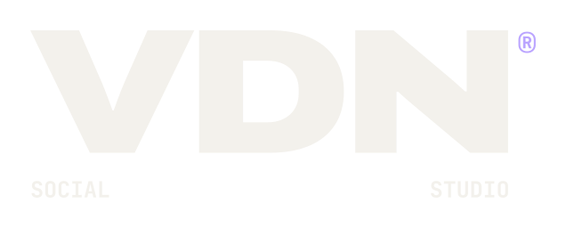

Création
graphique
& vidéo
Communication visuelle, identités et contenus pour les clubs, les marques et les événements.
Actuellement en alternance chez les Levallois Metropolitans, je crée des contenus graphiques et vidéo pour accompagner la communication du club. Mon expérience en agence événementielle et ma formation en communication audiovisuelle me permettent de travailler sur des projets variés, de la conception visuelle à la création de contenus pour les réseaux sociaux.

Metropolitans
Mes créations pour le Levallois Metropolitans Basketball Club : publications LinkedIn, stories Instagram, TikTok et vidéos YouTube. Touchez une création pour la voir en grand.
publiées
YO Agency
Mes projets en agence événementielle 360° : vidéos d'événement et communication interne pour les clients de l'agence. Touchez un projet pour voir le brief, la problématique et les résultats.
réalisés
École
Projets menés pendant ma formation en école. Touchez un projet pour voir le brief, la problématique et les résultats.
Ce que je fais pour vous
De la petite mission ponctuelle à l'accompagnement sur toute une saison.
Identité visuelle
Logo et déclinaisons, charte graphique, mascotte, menus, packaging.
Commerces, restaurants, food trucks, associations qui se lancent.Contenus réseaux
Visuels et templates, annonces de match, résultats, stories, calendrier de publication.
Clubs sportifs, marques et créateurs qui veulent publier régulièrement.Vidéo
Aftermovies d'événement, teasings, reels et TikTok, vidéos de présentation.
Entreprises, événements et athlètes qui veulent se montrer en mouvement.Print & interne
Affiches, flyers, newsletters et supports d'événement.
Équipes qui veulent animer leur communication interne.Portfolio & site web
Portfolio en ligne ou site vitrine sur mesure, adapté au mobile, avec formulaire de contact et mise en ligne.
Étudiants, créatifs, indépendants et petites structures qui veulent une vitrine en ligne.CV
Une formation en communication menée en alternance, côté agence puis côté club de sport professionnel.
- 2026 – aujourd'hui
Community manager · alternance
Levallois Metropolitans Basketball ClubRéseaux sociaux du club : visuels de match, stories, vidéos courtes et contenus autour de la vie de l'équipe.
- 2026 – aujourd'hui
Bachelor Communication audiovisuelle & marketing
Production vidéo, stratégie de marque et marketing digital.
- 2024 – 2026
Assistant chef de projet · alternance
YO Agency · ClichyAgence événementielle 360° avec des clients en Europe, en Asie et au Moyen-Orient. Identités visuelles, supports graphiques (flyers, newsletters, affiches), vidéos et logistique événementielle.
- 2024 – 2026
BTS Communication
Stratégie, création, digital et événementiel.
- 2024
Baccalauréat général
Lycée Notre-Dame-Providence
Missions freelance en identité visuelle, contenus réseaux et vidéo pour des clubs, des marques et des événements, en parallèle de mon alternance aux Levallois Metropolitans.
Permis B · Paris et Île-de-France
Un projet ?Parlons-en.

ContactLogo, visuels pour vos réseaux, vidéo d'événement : décrivez votre besoin en quelques lignes et je vous réponds sous 48 h.
Ou directement matteo.vandenesse@gmail.com